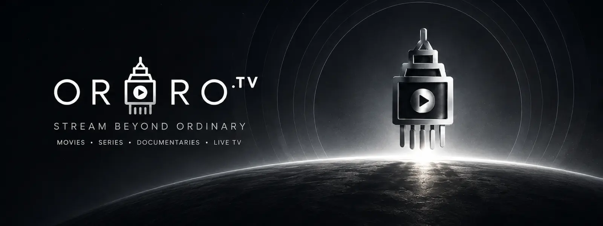

Unofficial · Open source · tvOS 15+
Ororo.tv Player for Apple TV
Watch Ororo.tv movies and TV shows on your Apple TV with a native tvOS app. Sign in with your Ororo.tv account, browse and search the catalogue, watch with English subtitles, and pick up where you left off.

What it does
A focused Ororo.tv client built for the Siri Remote and the big screen.
-
Movies and TV shows
Browse the catalogue by genre and sort by popularity, rating, year, name or recently added.
-
Search
One search screen for both movies and shows.
-
English subtitles
Subtitles stay in sync with playback. A subtitle language picker is planned.
-
Resume playback
Movies and episodes open where you stopped, or start again from the beginning.
-
Favorites
Press and hold a title to add it to Favorites or reset its progress.
-
Quality picker
Let the app choose, or cap playback at 480p, 720p, 1080p or 4K.
-
English and Russian
The interface follows your Apple TV's language.
-
Private sign-in
Your login is kept in the Apple TV Keychain and sent only to ororo.tv, over HTTPS.
Install it on your Apple TV
Ororo.tv Player isn't on the App Store, so you build it onto your Apple TV from a Mac with Xcode.
- A Mac with Xcode installed
- An Apple TV on tvOS 15 or later, on the same network as the Mac
- An Apple ID (a free one works)
- An Ororo.tv account
-
Install Xcode
Get Xcode from the Mac App Store, then add your Apple ID under Xcode › Settings › Accounts.
-
Download the code
git clone https://github.com/max-hunts/ororo-player-tvos.git -
Set your signing team
cp Config/Local.xcconfig.example Config/Local.xcconfigOpen
Config/Local.xcconfigand setDEVELOPMENT_TEAMto your team ID andBUNDLE_ID_PREFIXto something unique, such ascom.yourname. -
Pair your Apple TV
On the Apple TV, open Settings › Remotes and Devices › Remote App and Devices. On the Mac, open Xcode › Window › Devices and Simulators, select the Apple TV and enter the code it shows.
-
Build and run
Open
Ororo-Player.xcworkspace, choose theOroro-Player-tvOSscheme and your Apple TV, then press Run (⌘R). -
Sign in
Use your Ororo.tv email and password.
Apps signed with a free Apple ID stop opening after 7 days; run it from Xcode again to renew. A paid Apple Developer Program membership extends that to a year.
Questions
Is this the official Ororo.tv app for Apple TV?
No. Ororo.tv Player is an independent, open-source project. It isn't affiliated with or endorsed by Ororo.tv.
Is it on the App Store or TestFlight?
No. You install it from a Mac with Xcode; see Install above.
Which Apple TV models does it run on?
Any Apple TV on tvOS 15 or later: Apple TV HD and every Apple TV 4K.
Do I need an Ororo.tv account?
Yes. You sign in with your own Ororo.tv account.
Does it work on iPhone or iPad?
No, it's Apple TV only. The original project, maxovtsin/ororo-tv-player, also had an iOS app.
Which subtitles are available?
English for now. A subtitle language picker is on the roadmap.
Is my password safe?
Your login is stored in the Apple TV Keychain and sent only to ororo.tv, over HTTPS, as HTTP Basic auth. The code is open, so you can check for yourself.
How can I help?
Report bugs and send pull requests on GitHub. CONTRIBUTING.md has the details.